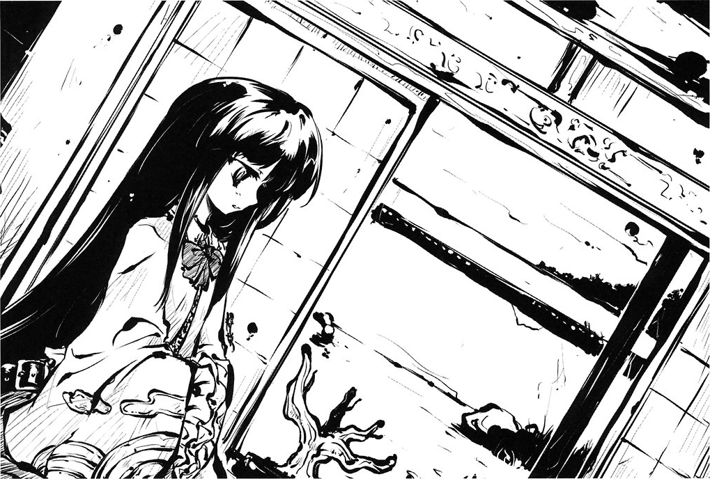
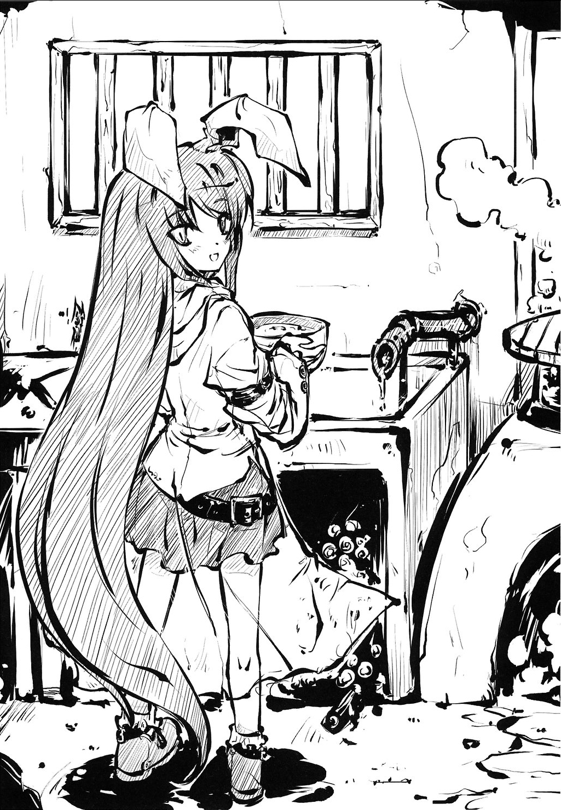
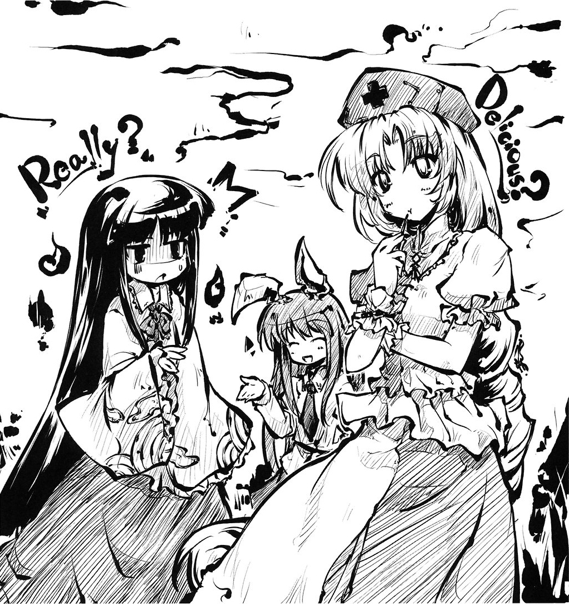
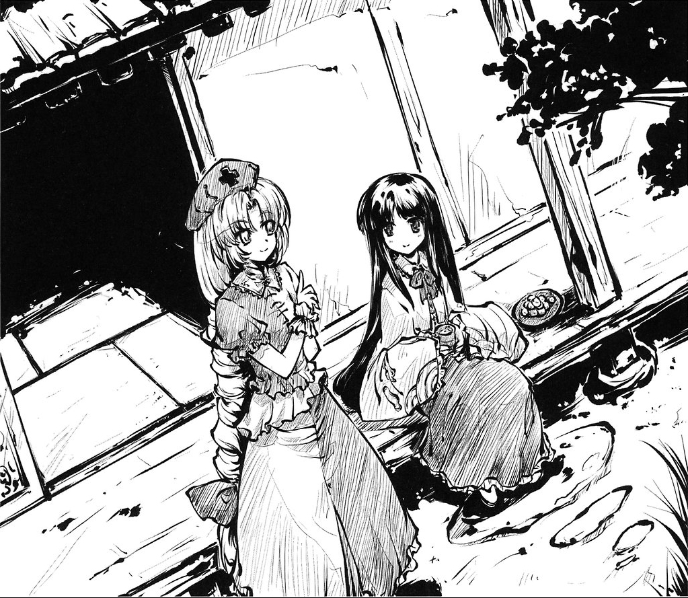

Chapter 2
Gem of 3000 Years
The bamboo forest was enveloped in a deep fog, and a human lost in it would be fooled into believing that it stretched endlessly in all directions. The wild bamboo doesn't form any paths, the ground gently rises and falls in hills and there aren't any proper landmarks. Even if you try to walk straight ahead, at some point you end up back at the same place. Such qualities has given it the name the Bamboo Forest of the Lost.
In the Bamboo Forest of the Lost lies my residence, Eientei. I've lived here for quite a while, but time has only begun to move for me since that incident occurred. Since the people of Earth attacked us two or three years ago, I've lifted the spell of eternity over Eientei.
I did this because I was so fiercely jealous when I saw the cooperation between the humans and the youkai. I felt so foolish for living hidden in fear of the moon for a thousand years.
The spell of eternity is a halts the progress of history, denying any sort of change to preserve purity.
Living things stop growing, food never spoils, fragile things don't break even if dropped and spilt milk returns to its glass. In my self-awareness as a Lunarian, I was afraid of the impurity of the Earth, and cast this spell over everything in the manor, but when faced with the charms of the Earth, I undid it myself.
As a result, Eientei too was enveloped by the impurity of the Earth. Food rotted if you didn't eat it quickly, living things began to age naturally and you had to make sure to carry valuable vases with care. But, in return, our restless days of living in hiding from the moon's emissaries became cheerful and enjoyable.
And so Eientei, and those of us living there, became a part of Earth. We can never return to the moon, but I have no regrets.
There is a particularly odd bonsai plant in Eientei. Its coral-like branches bore no fruit or flower, and at a glance it looked as if it could only be dead.
But I know that this bonsai will some day blossom and bear splendid fruit. I also knew that it wouldn't flower unless certain conditions were met. However, those conditions were beginning to take shape.
Tonight is the night of the harvest moon. We'd intended to hold our monthly lunar festival, but due to the inclement weather I decided to go to Eirin's room to hear her plans for the evening.
"It looks like we won't be able to see the harvest moon this year due to the rain."
I said this as if I were disappoined, but in truth I was a bit relieved. Though I used to fear the nights when the harvest moon shone down brightly, in the past two or three years I've come to enjoy watching the full moon. This change is a bit frightening. But more than that, it was more relieving not to have to worry about being seen by the moon.
"It's best if the full moon is hidden behind the clouds, anyway."
A series of light rain showers had been falling off and on lately, making it feel like we'd entered the autumn rainy season. It felt like there hadn't been very many sunny days this autumn. Today had been no exception, and small showers had been falling off and on since the morning.
"Oh, Eirin? Maybe we should tell the Inabas to be careful not to let themselves catch a chill during today's festival."
"No, no, Kaguya, I've already told them we'll hold the festival indoors if the rain worsens. I'm sure they wouldn't want to make dumplings in the rain."
"That's true, they wouldn't want to eat dumplings that were made in the rain."
I can't help thinking Eirin's been acting more kindly towards the rabbits lately. Long ago, Eirin treated all of the Earth's creatures - not just the rabbits - as nothing more than her hands and feet. Even in the lunar capital the Lunarians saw the rabbits as nothing more than tools, so I suppose it's no surprise. Lunarians are of such a higher class than the people of Earth it's not an exaggeration to say they're in a different dimension entirely.
I suppose at some point Eirin began to start seeing us Lunarians and the creatures of Earth more as equals. This was probably due to having lived in Gensokyo, where youkai and humans lived together as equals.
That's not a bad thing, though. It's more comfortable to me than being treated as special. Since Eirin and I are the only two Lunarians in Gensokyo, believing us as being superior to the people of Earth would only lead to isolation, and she would have too many tools if that's all she saw the Earth people as.
I don't want to dwell much on what's happened long ago, but I've never been seen as equal to anyone on Earth. Even when I was exiled to the Earth after committing the crime of drinking the Hourai Elixir, not a single person treated me as a normal human being.
As a matter of fact, when I first came down to Earth after my exile, it was in a bamboo forest under thick fog, just like this one. I remember how the old couple that found me were especially careful when they picked me up.
It's only natural. I was found inside a glowing bamboo shoot in the forest, too small to be thought of as a human being, so I wouldn't be surprised if I were taken as some sort of youkai. I wonder why the old couple took me home and cared for me in an age where humans were often caught and eaten by youkai.
I believe the reason why the old couple took such good care of me is that they were periodically rewarded by the moon for their foster care. I got the impression that the people of the moon would leave gold in glowing shoots of bamboo like the one I was found in as a reward for their care. So, they let me live with them because they believed they would become rich. That's why they looked so closely after me and never allowed me to leave the house. They didn't want another household to snatch up their key to wealth.
In addition, I stood out on Earth. I didn't do anything particularly unusual, but rumors spread, and before long a great number of people had come to see me. I tried to avoid becoming the center of attention on Earth, and before long feelings of love and gratitude began to emerge towards the old couple in their efforts to help shelter me.
As I lived out my days in that fashion, I began to see Earth as a more charming place than the lunar capital. I never used my eternity magic during that time, so I think I was probably weakened somewhat under the influence of the Earth's impurity, even if only the faintest bit.
In those days, I still thought of myself as nobility, different from the people of Earth, and I only thought of the Earth people as means to an end, but... Gensokyo is truly a mysterious place. It is a world where humans and youkai live side by side, and where the old and the new intermingled. Nobody would bat an eye at the presence of Lunarians or advanced lunar technology. People would just laugh if we said we were some sort of high-class nobles.
 Gensokyo was the place that put me at ease, because even if I didn't spend my time in hiding I wouldn't stand out at all.
"Especially since I hear the pH level in the rain is so low nowadays. After all, the Inabas have so much hair..."
"Hmhmhm, don't worry, Kaguya. The pH level of the rain in Gensokyo is 6. That won't make any plants wither, so the rabbits' hair won't fall out."
Eirin responded seriously to my joke with "And even if it did, it would be easy enough to make a medicine to grow it back."
I want to study to learn a bit more about Earth. Of course, I can't compare with Eirin's intellect. Eirin could come back with a response to any complicated words or phrases I used on her. Honestly, I don't even know what pH is supposed to mean...
I wonder how she's come to know so much. It's always something I've found mysterious, even back from my time on the moon. She is well-informed of the Earth and the moon, and despite living in Gensokyo she even knows much about the outside world.
However, particularly erudite people do have what you might call their own particular habits. They don't typically relay their knowledge in an easily understand fashion. Sometimes they'll say something difficult to understand on purpose to enjoy the reactions of others. I think there's a world of difference between a teacher and a scholar.
"So, if it's pH 6... umm..."
"It means the water is very neutral. It's not terribly acidic."
So the pH rating is a measure of how acrid the water is. This time I'm grateful to Eirin for having made it so easy to understand.
"Ah, so rain can become acidic as well. Well, why don't we have the Inabas make their dumplings inside even if it's not raining too hard."
Eirin nodded as I said that.
I left Eirin's medicine-scented room behind me and went to tell Reisen, who was in the kitchen, about the plans for the day's festival.
"Oh, Princess Kaguya. We're almost ready, so..."
Reisen was already wearing a raincoat, and seemed ready to head outside to pound rice cakes.
"No, that's okay. Please make them inside today."
"Huh?"
This seemed to take Reisen by surprise. This was probably because the only other time we'd held the festival indoors the wind was so strong the rabbits couldn't even stand up.
"Master said to stay inside if the rain got too bad, but it's still only a light shower outside, so we were going to go out..."
"The rain isn't too acidic, so you can stay inside."
"The rain isn't...? What does that..."
"A pH level of 6 is, well, don't worry about it. Just do as I say, and everything will be all right." Eirin liked to say things like that. It's feels good to say it even if there's no real reason to do so.
"O-Okay, thank you. I believe we'll hold the festival inside Eientei today, then. It might get a little loud though..."
The rabbits sing songs while they pound rice cakes during the lunar festival. It's not really part of the ceremony, per se, but the rabbits seem to enjoy it, so we let them be. Well, it might make them more nervous if they did it inside.
 "How strange. It should be such a quiet festival, but it's always so boisterous."
"Uh, no, we'll be sure to keep quiet this time."
"No, no, it's quite all right. I know how you all enjoy singing while you pound rice cakes."
"We? Well, I won't, actually. But Tewi and the others never listen to what I say, so..."
"If they won't listen to you, then there's no point in promising to be quiet, is there?"
Just as Reisen said she was very sorry, Tewi's voice could be heard calling out through the back door in the kitchen, "Is it time yet?"
"Well, in return for the noise, I'd like you to try to add more kinds of flavors to the dumplings today."
"That is a simple request. Please let us know if you have anything in particular you'd like."
I thought for a while, and eventually responded, "We have three-colored dumplings, so why not seven-colored dumplings?"
I returned to my room, and to the task of caring for the unusual bonsai.
I just don't have anything to do, even though it's the day of the lunar festival. Well, it's not limited to festival preparation, I rarely have any tasks that I need to perform. I get my information about what's happening beyond the bamboo forest from the Inabas, and Eirin takes care of any emergency patients or visitors. Honestly, a life where you don't have to do anything is boring.
I think it was the same when I was still in the lunar capital. I became fascinated with Earth due to my boredom, but I didn't understand until I first came here. The lack of anything to do was not limited to my environment, whether the moon or Earth, but it was a personal issue. A heart that relies only on outside stimulation leads to boredom and unease.
So, in an effort to break through that boredom, I made it my job to care for this bonsai. It really does change your mood to have something you must do every day.
The bonsai I've been gazing at so intently never changes no matter how much I stare at it. However, it shouldn't be possible for anything on Earth to remain unchanged. Anything with a form will erode, and anything that lives will die. This is a fate that nothing on Earth can escape. Eirin told me this is because of the impurity that permeates all things on Earth.
This impurity steals the eternity from all things' life force and physicality, and at the same time it plunders from their lifespan. Since all things on earth are tainted in this manner to some degree, nothing can last forever. And, of course, nothing can remain the same forever.
However, the bonsai before me is not tainted. It has been able to preserve its eternity. It appears unable to grow not because it's already dead, but because it's still full of eternity thanks to my power. My power is the ability to control eternity and the instantaneous. It gives me the ability to create a pure eternity that could never exist otherwise on the Earth.
In fact, this bonsai is a plant that only grows in the lunar capital called the udonge. It has the same name as a legendary plant on Earth that's said to flower once every three thousand years.
The plant on the Earth is a different plant called the udonge. It takes its name from the plant of legend, and only blooms very rarely.
Real udonge is a tree that only grows in the lunar capital. When it blossoms, beautiful seven-colored jewels appear on its branches. The Jeweled Branch of Hourai that I requested from a man who came seeking my hand in marriage long ago refers to a branch from an udonge tree that has borne these "fruits." The Jeweled Branch of Hourai comes from the Hourai udonge.
The udonge never blooms or bears fruit in the lunar capital. It looks deteriorated, but it embodies the sense of "the flow of time" inherent in the phrase "wabisabi". It only lives, never growing or bearing fruit. But, if you bring one of its branches to Earth, it changes its form in reaction to the Earth's impurity. It feeds on that impurity and begins to grow, bearing fruit to a beautiful seven-colored gem.
I don't know how a plant that feeds on impurity could live on the pure moon, but I'm sure it was created by a certain sage that lived in the lunar capital. As soon as any impurity found its way onto the moon, the plant would blossom, allowing it to serve as a detection mechanism.
The emissaries of the moon typically take a branch from an udonge with them when they descend to Earth. Once there, they give it to an authority figure, and it reacts to the impurity in that person and bears splendid fruit. The more powerful the person is, the more beautiful the gems borne by the branch. Of course, the recipient invariably takes that as a sign of their authority.
Still, everything on the Earth eventually breaks down. The prosperous will always return to nothing, and even the powerful will eventually fade away. When that happens, the jeweled branch of the udonge will be coveted by many, and a fight over it will ensue. Thus, the peace of the Earth is disrupted and turned into chaos.
In other words, the udonge is often used as an implement by which the moon causes disorder on Earth. It should be easy to understand why this is by examining human history. Human history and growth are both linked closely to strife. Without conflict, humanity would have no impetus for growth. When humans are satisfied with their present condition, they may as well give up on life. The people of the moon spend much of their lives thinking of the people of Earth. The history of Earth has progressed just the way the moon has wanted it.
"Kaguya, look. The rain's stopped, and you can see the moon through a break in the clouds."
I opened my eyes at the sound of a voice behind me. I must have dropped off while looking at the bonsai and thinking.
"Oh, so it has. I must have dozed of while looking at the bonsai."
The udonge bonsai I held in my hands still hadn't borne fruit or flower.
This was because I'd cast a spell of eternity over the entire mansion, but I had lifted that spell after recent events. In other words, Eientei's history had begun to advance, just like the rest of the Earth. Soon, the Earth's impurity would begin to spread throughout the mansion, and Eientei would become just another part of Earth. It was just a matter of time before the udonge blossomed.
If the outlook Eirin and I had held has changed, it's probably the effect of the Earth's impurity. Once touched by the impurity of the Earth, you can never go back to the lunar capital, but we had no intention to do so. I do feel sorry for Reisen, though, who got caught up in our affairs.
Thinking of which, Eirin often calls Reisen "Udonge." I wonder why that is? She must think of her as something to gauge the extent of the impurity that's creeping into us... Or perhaps it's meant to mean that a moon rabbit who knew no impurity on the moon will become something beautiful when touched by the Earth's.
"Oh my, maybe it's because of the rain, but the moon looks so beautiful tonight. Oh, what about the Inabas? I told them they could have the festival indoors tonight, but..."
Eirin, smiling, replied:
"They're already outside. They seem to be more comfortable outside."
"Hmmm. I wonder what that means."
"No matter what you do, you're always more at ease when the boss isn't close by."
"Well, maybe we should have them always hold the festival outside, no matter what the weather. Come nowaki (*1) or anything else." The rabbits' voices drifted in from outside the window. Their singing had been very restrained when there were inside. They seemed to be having a lot of fun singing now. Eirin noticed the udonge bonsai.
"...It still hasn't changed, I see. I'm sure it won't be long before it starts growing. And after its first flowers bloom, it should bear fruit to splendid seven-colored jewels. It will be nice, won't it?"
"Yes, it will. The jeweled branch of the udonge is a special privilege for the Earth people. Oh, and I've done something to try to help give us a taste of that jeweled fruit today."
Eirin asked, "What do you mean?" and tilted her head to one side. It's nice to be able to befuddle Eirin once in a while.
"I asked Reisen to make seven-colored dumplings instead of the usual three-colored ones for today's festival."
"I see, how interesting. I don't know how much I'd like it if they turned out the same colors as the udonge's jewels, though."
"Why is that?"
"Because the Hourai jewels have colors like blue and indigo. Those aren't very appetizing, don't you think?"
The rabbits' singing voices outside became more intense. The sounds they made pounding dumplings sounded just like a Japanese taiko drum. The rabbits have a mysterious ability. Even beyond telepathy, they're able to maintain a strong connection without exchanging a word.
Reisen can communicate with the rabbits on the moon, and Tewi and the others can all dance in perfect rhythm without saying a word. The rhythm and cyclical nature of the pounding all came together to make a mysterious sort of music.
Eirin and I took in the music the rabbits were playing outside with our tea and enjoyed the autumn night. Because it was the harvest moon, we took some time to relax outside.
"The rabbits' rhythm tonight is amazing, isn't it? I wonder why that is."
"It must be because it's the harvest moon..."
Having said that, Eirin added, "Just like kecak, isn't it?", but I had no idea what she was talking about.
"By the way, Eirin. Remember two months ago... Doesn't it seem like something's been happening since then?"
"Yes, someone on Earth has definitely been spreading the subject, and everyone's talking about the moon nowadays."
That's right. I think it was about two months ago that the rumors started of a revolutionary force, led by Eirin, was going to infiltrate the moon, and that fugitive moon rabbit showed up at the shrine.
We'd heard rumors of internal disorder in the lunar capital before then, and someone was definitely trying to cause unrest in the lunar capital. Perhaps they were using Eirin's name to serve as a scapegoat, or perhaps she just came up naturally.
 I didn't worry too much about it after that since Eirin sent a sealed letter to certain people she trusted on the moon explaining the circumstances, but since then more people have been spreading rumours about the moon in Gensokyo.
"But there shouldn't be any humans that know that that rabbit from two months ago was a moon rabbit, should there?"
"Well, that probably was an unexpected accident."
"Accident?"
"It probably wasn't something the real mastermind imagined would happen."
"...I wonder if there really is such a person? I just don't have any idea what a mastermind would have imagined. But, what if it wasn't an accident, and that mastermind planned it, too?"
"If that's the case... then I give up."
Eirin said, "After all, I don't have any other ways to contact those girls on the moon," raising both hands to about shoulder height, facing the sky.
The war on the moon wasn't the only problem. It seemed that the vampire was trying to assemble a moon rocket. According to rumor, they were attempting some sort of large-scale construction and had gotten the shrine and Kourindo involved somehow.
"I wonder if that vampire is behind it all. They say they've almost finished developing a moon rocket, and trying to invade the lunar capital seems like something she'd do."
"The possibility is high, but that would mean that using me as a scapegoat, the flag drifting down from the moon and that moon rabbit's appearance were all just coincidences."
"And why is that?" I had an idea of what her answer would be, but I was a bit disappointed to hear the response I'd expected: "Because that child doesn't know anything about any of those."
The loud, resounding sounds of the pounding had turned into the chattering voices of the rabbits outside. It seems this month's festival had ended without incident as well.
When Eirin and I went outside to check, the dumplings had already been piled up on a large platter. They were, indeed, magnificent seven-colored dumplings, but the psychedelic colors, such as a gaudy red and a dazzling blue, made them appear quite unappetizing.
"Oh, Princess Kaguya, Master. We're still cleaning up, so please wait a bit."
Reisen ordered Tewi to clean up the millstones. I looked to the sky to try to find the wonderful moon called the harvest moon, but it was nowhere to be seen.
"The rain has cleared up, but... the moon is hidden behind the clouds again."
"Yes, it is. It was only out for the briefest of moments. I'd hoped we'd finally be able to sit and watch the moon, but... what's the matter?"
"No, just hearing the words 'I thought we'd finally be able to sit and watch the moon' from a fugitive moon rabbit was amusing." I couldn't help laughing softly.
A little embarrassed, Reisen said, "Well, if you spend time on Earth, you start to do the same things Earth people do."
The earth rabbits were obediently cleaning up all the millstones. Normally they'd halfheartedly clean up for a while before disappearing off somewhere, and Reisen was amazed by their obedient behavior.
Of course, that was because we hadn't mixed in the usual medicine with the dumplings. Normally we'd sneak in something to make them more excitable as they snuck a few dumplings during the festival to make it more lively, but we exchanged it with a strength-nourishing medicine because we were to have some dumplings tonight as well. Without the usual stimulants, the rabbits were more obedient.
Still, it seems the rabbits had plenty of excitement during the festival, regardless. If they can enjoy it so much without us having to add medicine to the dumplings, then nothing could be better.
"Oh, Reisen. I asked for seven-colored dumplings, but they turned out to be truly vivid, didn't they?"
I added to myself, "The three-colored dumplings being peach and white and dark green isn't very appetizing either."
"Ah, why don't I tell you about them? We made rainbow dumplings with red, orange, yellow, green, blue, indigo and violet. We did our best to find ingredients to make each of the different colors... but we really only had the colors in mind, so you may not think the contents are very appetizing. Do you still want to hear about them?"
"No, thank you." They weren't all that appetizing before I knew what was in them, and it would be a shame if I had any less desire to try to finish these tonight.
Eirin placed a blue dumpling in her mouth and said, "This is actually really good." So Eirin's knowledge is such that it can stand up to any challenge anywhere. I was impressed.
"Sorry to change the topic, but don't you get the impression that the disorder on the moon is spreading to the Earth now?"
Eirin and I glanced at each other and said together, "It's nothing for the rabbits to worry about."
Reisen looked a bit uneasy.
"Well, I don't know if it's a big deal or not, but the vampire's maid came here asking about fuel to take them to the moon."
Kaguya had a very laid-back personality for a fugitive. This hadn't always been the case... perhaps she'd just led a peaceful life for too long.
"Oh, she came here, too?"
"Too?"
"Eirin and I were talking about this before. The vampire is trying to build a rocket to go to the moon. It looks like they're going around trying to find rocket fuel for it."
"I see. Well, I sent her away immediately when she came here..."
"Why did you send her away?"
"What? Well, there's no reason for us to help Earth youkai try to get to the moon, is there? That, and I didn't want to disturb either of you about it."
"You shouldn't have sent her away, but sent out tea. Just not information."
A cold wind began to blow, perhaps due to the rain earlier. It looked like we'd passed another full moon safely. Honestly, I didn't believe we'd have to worry about someone from the lunar capital coming to find us during the full moon anymore. We believed such things were no longer possible.
I wonder how it could be that my outlook changed so much in three years after having spent over a millennium in hiding in this manor behind my spell of eternity.
If it's due to the effect of the impurity that wears down everything on Earth, Earth people must adapt quite quickly to change. They're not always worrying over the same thing, but rather always going from one problem to the next, and forgetting the unpleasant experiences. If I've changed this much, I wonder if Eirin has, as well?
Eirin has been alive for much longer than I have. Due to her longevity, even on the moon, she was a key figure in her role as sage. Even since coming down to Earth she has a way of thinking that's quite different from the humans'.
That's why I thought that even if I lifted my spell of eternity, she wouldn't change much. I thought that the Earth's impurity had nothing to do with us. Of course, reality was not like that, and one can see slight changes even in Eirin's behavior.
Eirin opened a clinic on Earth. Now she's well-known enough that people in the village refer cases to Eientei that their doctors cannot heal. The old Eirin would never have thought to do such a thing. Before she would have only seen them as means to her own ends, but now she goes so far as to help maintain their health.
As for why she opened the clinic, Eirin herself said, "We'll have to live as Earth people now, so we can't neglect our duties towards others. It's customary for Earth people to help others in need," she said. It must be like that saying, a day's work for a day's bread.
I believe I understand that. Even the couple that raised me had their peaceful life taken away by the moon's opulent rewards. Earth people don't expect results for anything beyond their own actions. To do so would be to invite unhappiness.
Even though I understand it, I can't put it into practice myself. And I get the feeling that there are many people, not just me, who aren't working for the good of other people. When I tell Eirin about these worries of mine, she avoids the question and says, "Kaguya, just worry about doing what you, yourself, want to do. If there's nothing you want to do, then make finding something to do your job."
I still haven't found a role for myself as a member of Earth society, but something should start around the time the udonge blossoms. I thought that the flower might bloom about the time I found something to do.
"Reisen. If the vampire's servant comes here again, I hope you'll bring them to me."
Eirin's advice to Reisen was worded a bit sternly, so Reisen appeared a bit downcast as she said:
"I'm sorry, Master. Did you want to try to find out something from that maid? I think she intends to come around once more..."
Eirin replied, "If you bring her to me, I can turn her down politely," and smiled. Reisen seemed a bit more at ease on hearing this, and said, "Well, then, next time I'll be happy to bring her to you."
"We no longer have the means to go to the moon anyway."
"That's true... but even so, the vampire will want to know how to get there," Reisen whispered, gazing at where the harvest moon should have been.
Eirin, noticing the subtle change in Reisen's demeanor, said this to put her at ease.
"Anyway, there's no need for you to worry even if whatever disturbance comes to the Earth."
Reisen seemed to achieve some sort of breakthrough, and asked her Master once more for confirmation.
"Is that because there's no way for anyone on Earth to get to the moon?"
Eirin smiled mysteriously upon hearing that and responded:
"Hahaha, that's not it. We're not members of the lunar society anymore. We're just a simple group of humans and youkai living on the Earth, so there's no need for us to worry about what happens on the moon."
Once I heard that, I smiled as well, and decided to leave the strange goings-on in Eirin's hands.
*1: A typhoon/hurricane in the fall.